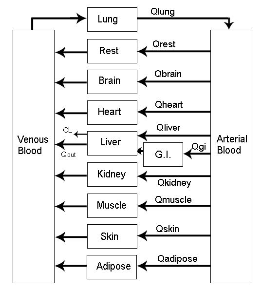

CEU BA: Use Case Seminars series
A Decade (or Two) of
Using R in Production
Gergely Daróczi
@daroczig
$ whoami

$ whoami

$ whoami

$ whoami

$ whoami

$ whoami

$ whoami

> Sys.setenv(env = "prod")

> isTRUE(interactive())

> sample(projects, size = 5)

> sample(projects, size = 5)

> sample(projects, size = 5)

> sample(projects, size = 5)

> sample(projects, size = 5)

> sample(projects, size = 5)

> usethis::create_startup(…)

> demo(“rapporter.net”)

> demo(“rapporter.net”)

> demo(“rapporter.net”)

> demo(“rapporter.net”)

> demo(“rapporter.net”)

> demo(“rapporter.net”)

# cat /etc/passwd

> microbenchmark::microbenchmark(…)

> microbenchmark::microbenchmark(…)

> microbenchmark::microbenchmark(…)

> help(microbenchmark)

> plot(microbenchmark(…))

> ?alias

Source: Junior dev being awesome
> order(‘I-heart-R’)

> order(sample(n = 3))

> str(platform)

> str(stack)

> debugonce()

> git2r::commits()

> git2r::commits()

$ groups

$ research()

> library(AWR.Snowflake)

> options(error = browser())
> compare(‘spark’, ‘K8s’, …)

> compare(‘spark’, ‘K8s’, …)

> ls(envir = ‘jobs’)

> get(‘job’)

> eval()

> eval()

> ls(envir = ‘invocations’)

> ls(envir = ‘snapshots’)

> intro(“PK/PD models”)

> intro(“PK models”)

Source: Mortensen et al (2008): Introduction to PK/PD modelling.
> intro(“PK models”)

Source: Mortensen et al (2008): Introduction to PK/PD modelling.
> intro(“PK models”)

Source: Mortensen et al (2008): Introduction to PK/PD modelling.
> intro(“PK models”)

Source: Mortensen et al (2008): Introduction to PK/PD modelling.
> intro(“PK models”)
\[C_{oral}(t)=\frac{A_{oral}(t)}{V}=\frac{K_aFA_0}{V(K_a-K)}(exp(-K \cdot t) - exp(-K_a \cdot t))\]
- \(C\) drug concentration
- \(A\) drug amount
- \(V\) volume of distribution
- \(K_a\) absorption constant
- \(K\) elimination rate
- \(F\) bioavailability
> intro(“PK models”)

\[C_{oral}(t)=\frac{A_{oral}(t)}{V}=\frac{K_aFA_0}{V(K_a-K)}(exp(-K \cdot t) - exp(-K_a \cdot t))\]
#' Concentration at a time computed using a one-compartment model (oral dose)
#' @param t time (hours)
#' @param dose dose amount (mg)
#' @param v volume of distribution (l)
#' @param k elimination rate constant (h^-1)
#' @param ka absorption rate constant (h^-1)
#' @param f bioavailability
#' @return numeric
#' @export
ct <- function(t, dose, v, k, ka, f) {
(ka * f * dose) / (v * (ka - k)) * (exp(-k * t) - exp(-ka * t))
}> demo(“PK models”)
library(data.table); library(ggplot2)
conc <- data.table(h = seq(0, 24, by = 0.1))
conc[, c := ctp(h, 1000)]
ggplot(conc, aes(h, c)) + geom_line()
> demo(“PK models”)
weight <- 74
meanlog <- log((weight * 0.6)^2 / sqrt(0.07^2 + (weight * 0.6)^2))
sdlog <- sqrt(log(1 + (0.07^2 / (weight * 0.6)^2)))
hist(rlnorm(n = 2000L, meanlog, sdlog), xlab = "Volume of distribution for 74 kg")
> demo(“PK models”)

> demo(“PK models”)

placeholder as cannot finish with an image
> demo(“rx.studio”)

> demo(“rx.studio”)

> demo(“rx.studio”)

> demo(“rx.studio”)

> demo(“rx.studio”)

> demo(“rx.studio”)

> demo(“rx.studio”)

> library(rx.studio)
<!--head
meta:
drug: ~
method: ~
target: ~
title: Calculate corrected weight for CrCl estimation
description: |
Using the Cockcroft-Gault 40% Obesity Adjustment for patients who are
greater than 30% of their ideal body weight.
packages:
- rx.studio
examples:
- list(HEIGHT = 174, WEIGHT = 72, SEX = 'Male')
inputs:
- !expr generate_input(type = 'HEIGHT')
- !expr generate_input(type = 'WEIGHT')
- !expr generate_input(type = 'SEX')
head-->
<%=
calc_cweight(HEIGHT, WEIGHT, SEX, adjthr = 1.3)
%>
> str(“rx.studio”)

> is.compliant(“rx.studio”)

Source: the_coding_love – When the library has good documentation
> is.compliant(“rx.studio”)